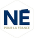
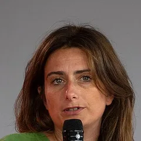

Ce qui a été fait
Lois votées, budgets et résultats mesurés pendant le mandat 2022-2027, datés, avec leur origine et leur source officielle.
Choisissez un sujet : ce qu'a fait le dernier mandat, ce que propose chaque candidat et la source de chaque information.
38 candidats déclarés, dans l'ordre alphabétique. Chaque parti garde le même logo et la même couleur sur tout le site : la couleur sert à le repérer, jamais à le classer. Statut de chaque candidature
 Nathalie ArthaudLutte ouvrière
Nathalie ArthaudLutte ouvrière
 François AsselineauUnion populaire républicaine
François AsselineauUnion populaire républicaine
 Gabriel AttalRenaissance
Gabriel AttalRenaissance
 Delphine BathoGénération écologie
Delphine BathoGénération écologie
 Olivier BechtLe Projet France (mouvement politique), sans parti
Olivier BechtLe Projet France (mouvement politique), sans parti
 Xavier BertrandNous France
Augustin BilletdouxSans parti
Xavier BertrandNous France
Augustin BilletdouxSans parti
 Karim BouamraneParti socialiste (mouvement La France humaine et forte)
Karim BouamraneParti socialiste (mouvement La France humaine et forte)
 Juan BrancoLes Ruches (mouvement citoyen)
Joël ChevéLa France adulte
Christian CollovatiSans parti
Juan BrancoLes Ruches (mouvement citoyen)
Joël ChevéLa France adulte
Christian CollovatiSans parti
 Nicolas Dupont-AignanDebout la France
Nicolas Dupont-AignanDebout la France Sylvain DurifElvita
Sylvain DurifElvita
 Clara EggerSolution démocratique
Clara EggerSolution démocratique
 Raphaël GlucksmannPlace publique
Raphaël GlucksmannPlace publique
 Anasse KazibRévolution permanente
Anasse KazibRévolution permanente Selma LabibNPA-Révolutionnaires
Selma LabibNPA-Révolutionnaires
 Francis LalanneFrance Libre (mouvement citoyen)
Jean LassalleRésistons !
Francis LalanneFrance Libre (mouvement citoyen)
Jean LassalleRésistons !
 Marine Le PenRassemblement national
Marine Le PenRassemblement national Jean-François LegendreÀ nous maintenant
Jean-François LegendreÀ nous maintenant
 David LisnardNouvelle Énergie
David LisnardNouvelle Énergie
Mira MarkovicParti animaliste Lydie MassardUnion démocratique bretonne
Benoît MathieuSans étiquette (démarche « Cap 500 signatures »)
Lydie MassardUnion démocratique bretonne
Benoît MathieuSans étiquette (démarche « Cap 500 signatures »)
 Jean-Luc MélenchonLa France insoumise
Jean-Luc MélenchonLa France insoumise Antoine MikolajczakÉquinoxe
Antoine MikolajczakÉquinoxe Manolo MlekuzTrajectoire
Manolo MlekuzTrajectoire
 Édouard PhilippeHorizons
Édouard PhilippeHorizons
 Florian PhilippotLes Patriotes
Florian PhilippotLes Patriotes
 Natacha PolonySans parti (campagne « Natacha Polony 2027 », démarche « Nous sommes la France »)
Natacha PolonySans parti (campagne « Natacha Polony 2027 », démarche « Nous sommes la France »)
 Bruno RetailleauLes Républicains
Bruno RetailleauLes Républicains Teddy RinerSans parti
Erwan RohouMouvement écologiste indépendant
Teddy RinerSans parti
Erwan RohouMouvement écologiste indépendant
 Fabien RousselParti communiste français
Fabien RousselParti communiste français
 François RuffinDebout !
François RuffinDebout !

Marine TondelierLes Écologistes
 Éric ZemmourReconquête
Éric ZemmourReconquête
Photos et logos sous licence libre (Wikimedia Commons). Le crédit de chaque photo et de chaque logo figure en bas de la fiche du candidat. Sans photo libre, les initiales sont affichées ; sans logo libre, le sigle du parti.
Sur chaque thème, on ne confond jamais ce qui existe déjà (les faits et les votes) et ce qui est annoncé. Lire la méthode complète
Ce qui a été fait
Lois votées, budgets et résultats mesurés pendant le mandat 2022-2027, datés, avec leur origine et leur source officielle.
Ce qui est proposé pour 2027
Jusqu'à 3 mesures clefs par candidat, en langage simple, avec le lien vers le programme ou la déclaration datée.
Comment chaque parti a voté
Pour 2 ou 3 grandes lois du thème, la position de chaque groupe à l'Assemblée nationale, avec le lien vers le scrutin public.
Même gabarit, 3 mesures au maximum par thème, même ton. Les candidats sont présentés dans l'ordre alphabétique.
Programmes officiels, déclarations datées, textes de loi, rapports et statistiques publiques. Chaque information renvoie vers sa source.
Nous décrivons ce qui est proposé et ce qui a été fait. Pas de note, pas de classement, pas de recommandation de vote.
Une erreur repérée ? Signalez-la. Réponse sous 72 heures, correction publique et datée.